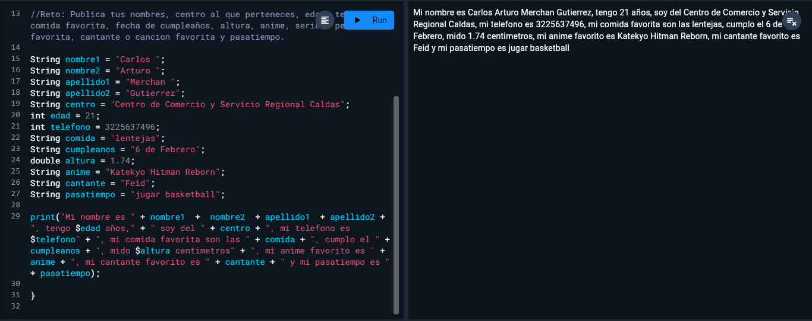
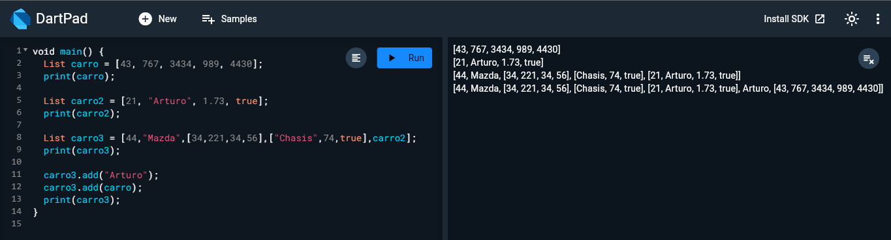

Sesion 1 de Flutter y Dart
Dart es un lenguaje de programación altamente tipado
Usa el método Void como C#, Java y los derivados de C
Toda línea de código termina en ;
Esta identado por llaves como JS

Tipos de datos en Dart

Concatenacion e Interpolacion

Comentario multiple

Reto

Reto
Condicionales en Dart

Mas condicionales

Tipos de datos dynamic y var

Listas
